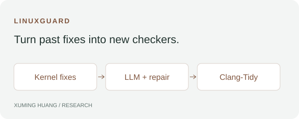
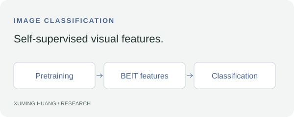
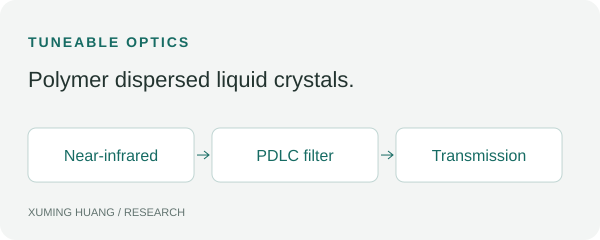

[3] CASH: Confidence-Calibrated Deep Feature Crossing for Classification-Aware Heterogeneous Task Scheduling
Chuanlin Jian, Yuanchen Sun, Xiangcheng Liu, Xuming Huang, Samaneh Beheshti Kashi, and Xing Hu
DOI ↗RESEARCH
I study how compilation, memory, and shared hardware shape AI inference, and build tools to make systems more efficient and reliable.
 | Xuming Huang · advised by Prof. Yiying Zhang
Undergraduate Researcher · WukLab, UC San Diego · Jan. 2026–presentDeveloped a JIT NPU runtime that overlaps CPU graph compilation with NPU inference and grows the KV cache with context: 91.98% less foreground compilation time and 33.05% lower average KV memory, while preserving model quality and decoding. Cached sorted compiler dependency vectors to reduce CPU sorting time by 94.2%, and built CPU/GPU/NPU benchmarks to guide device placement. |
 | Xuming Huang · advised by Prof. Michael Swift
Honors Course Research Project · UW–Madison · Jan.–May 2026Measured how background filesystem reads interfere with a fixed LLM inference workload: median latency increased 17.1%. Windows PerfMon showed stable working sets and page-fault counts plateauing near 29.5K, supporting shared-resource contention as the explanation rather than working-set thrashing. |
 | Xuming Huang · advised by Prof. Remzi Arpaci-Dusseau and Dr. Vinay Banakar
Undergraduate Researcher · UW–Madison · Jan.–Nov. 2025Built an LLM-driven pipeline over 50K+ Linux kernel commits to generate Clang-Tidy analyzers. Clustering and compiler-feedback repair produced 4× more valid checkers at 73% precision. A full-kernel validation harness uncovered 43 long-latent bugs with an average age of 4.7 years. |
| Xuming Huang · coauthor; advised by Prof. Xing Hu
Undergraduate Researcher · USST · Jan. 2024–Sept. 2026Contributed to experimental validation and performance analysis of CASH, which predicts workload–hardware affinity for CPU/GPU placement. In 5,000-task simulations using MIT Supercloud traces, the scheduler achieved 97.1% resource-matching accuracy, 46.5% lower response time, and 36.8% lower modeled energy than Meta-RHDC. |
Chuanlin Jian, Yuanchen Sun, Xiangcheng Liu, Xuming Huang, Samaneh Beheshti Kashi, and Xing Hu
DOI ↗
Jie Kong, Haotian Wu, Xuming Huang, Liangjie Wu, and Xing Hu
DOI ↗
Ruimei Zeng, Rongbo Bi, Junyang Zhu, Xuming Huang, and Qi Wang
DOI ↗